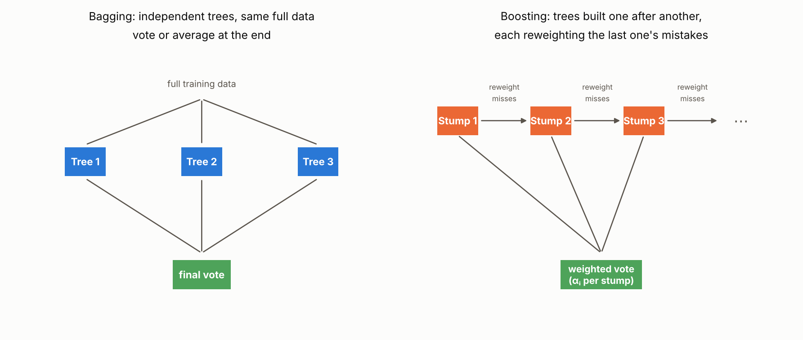
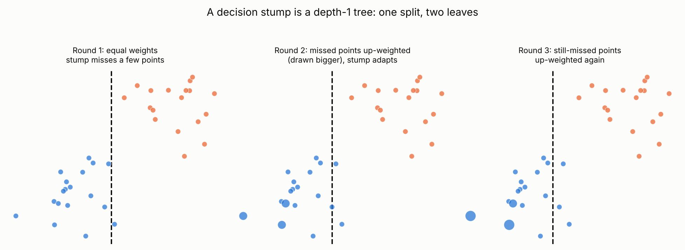
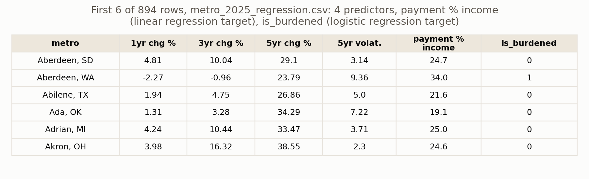
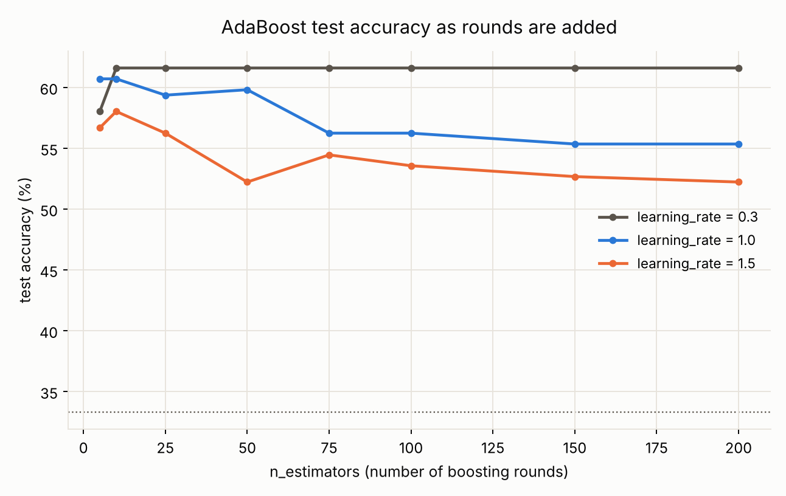
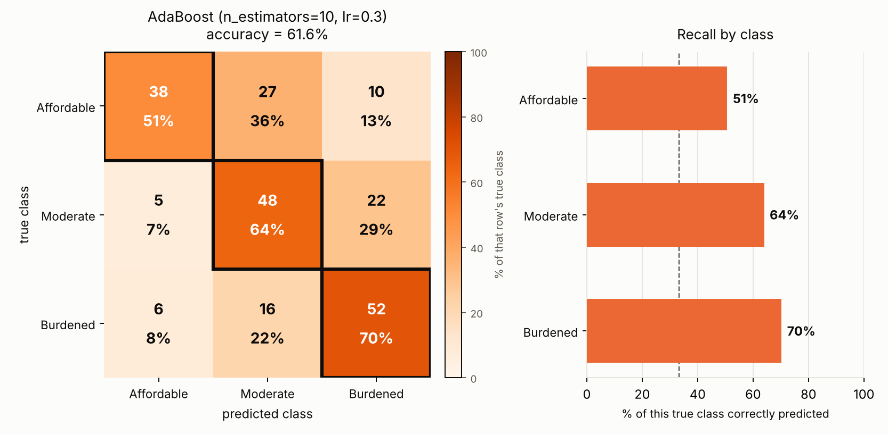

AdaBoost
Boosted decision stumps, tuned against the Decision Tree from Part 3
Objective. Classify a metro into one of the same three affordability classes used for Naive Bayes and Decision Trees, but by combining many weak decision stumps, built one after another and reweighted to focus on each other’s mistakes, rather than fitting a single tree, so the result can be compared directly against Part 3’s Decision Tree on identical data.
Overview
AdaBoost belongs to a family of methods called ensembles, which combine many weak models into one stronger prediction, but it builds that ensemble in a fundamentally different way than bagging methods like random forests do. Bagging trains many trees independently and in parallel, each on its own random sample of the full training data, and then lets them vote or average at the end; every tree in the ensemble is built the same way, with no knowledge of what the others got right or wrong. Boosting, which is what AdaBoost does, trains its trees one after another instead, and each new tree is built specifically to focus on the rows the previous trees struggled with. AdaBoost's individual trees are usually decision stumps: a decision tree with a single split and exactly two leaves, which is about the weakest possible tree. A stump alone is barely better than guessing, but a sequence of stumps, each one correcting for the last, builds into a strong combined model.


The mechanism that lets AdaBoost's stumps correct each other is a set of per-row weights that get updated after every round. Every row starts with equal weight. After the first stump is fit, the rows it misclassified have their weight increased, so the next stump, when it is fit, is effectively being told to pay more attention to exactly those rows, at the cost of paying somewhat less attention to the ones already classified correctly. Each stump also earns its own alpha weight once it is fit, based on how accurate it was: a stump with low weighted error on the rows it was trained on earns a high alpha, and a stump that performed barely better than chance earns an alpha close to zero. The final prediction is a weighted vote across every stump in the sequence, each one's vote scaled by its own alpha, so stumps that turned out to be more reliable have more influence over the final answer than stumps that barely helped.
Worked example: one stump’s weighted error and alpha
Using the binary is_burdened target, where the classic two-class AdaBoost formula applies
directly: a single depth-1 stump, fit on the 670 training rows with every row starting at equal weight
1/670, splits on 5 year price volatility at 6.435. That stump misclassifies 195 of the 670 rows, giving a
weighted error of 0.291. Alpha, the stump’s vote weight in the final ensemble, is computed as
0.5 · ln((1 − 0.291) / 0.291) = 0.445. After this round, the 195 missed rows are reweighted
upward and the full set of weights renormalized: their combined share of the total weight rises from 29.1
percent to exactly 50 percent, so the next stump fit on these new weights is effectively told to treat
getting those 195 rows right as equally important as getting the other 475 right.
| Quantity | Value |
|---|---|
| Stump split | 5yr volatility ≤ 6.435 |
| Weighted error (round 1, equal weights) | 0.291 |
| Alpha = 0.5 · ln((1−err)/err) | 0.445 |
| Missed rows’ weight share, before reweighting | 29.1% |
| Missed rows’ weight share, after reweighting | 50.0% |
w = np.full(n, 1.0 / n) # round 1: equal weights
stump = DecisionTreeClassifier(max_depth=1, random_state=42)
stump.fit(X_train, y_train_bin, sample_weight=w)
miss = (stump.predict(X_train) != y_train_bin).astype(float)
err = np.sum(w * miss) / np.sum(w) # weighted error = 0.291
alpha = 0.5 * np.log((1 - err) / err) # alpha = 0.445
w2 = w * np.exp(alpha * miss * 2 - alpha) # misses get up-weighted
w2 = w2 / w2.sum() # renormalizeData Prep
AdaBoost needs the same disjoint, labeled Training Set and Testing Set as every other supervised method
in this project, and reuses the identical 894-metro table and the identical 75/25 stratified 670/224 split
used for Naive Bayes, Decision Trees, and the regression tab, so results stay directly comparable. The
main AdaBoost model here is fit on the same 3-class affordability_class target used for
Decision Trees specifically, rather than the binary is_burdened target used for logistic
regression, so it can be compared fairly against the Decision Tree from Module 3 on identical rows and an
identical target. One data prep step that does not apply to this particular project is turning categorical
columns into numbers. Many AdaBoost datasets include categorical predictors, like a metro's region or a
property's zoning type, which need to be one-hot encoded (each category becoming its own 0/1 column) or
ordinal encoded before a tree-based model can split on them, since a split compares a feature to a numeric
threshold. All four predictors used throughout this project (1, 3, and 5 year price change, and 5 year
price volatility) are already continuous numeric values, so no encoding step is needed here; the binary
is_burdened target used in the worked example below is itself already numeric for the same
reason.

metro_2025_regression.csv. The four predictors are already continuous numeric values, so no one-hot or ordinal encoding step is needed for this project’s own data; the main AdaBoost model below uses the 3-class affordability_class column, while the worked example above uses the binary is_burdened column shown here.
Full file on GitHub ↗
Code
Python, using scikit-learn’s AdaBoostClassifier with a depth-1
DecisionTreeClassifier as the base stump, swept across n_estimators and
learning_rate.
for lr in [0.3, 1.0, 1.5]:
for n_est in [5, 10, 25, 50, 75, 100, 150, 200]:
clf = AdaBoostClassifier(
estimator=DecisionTreeClassifier(max_depth=1, random_state=42),
n_estimators=n_est, learning_rate=lr, random_state=42,
)
clf.fit(X_train, y_train)
acc = accuracy_score(y_test, clf.predict(X_test))
⋮ # best: learning_rate=0.3, n_estimators=10, test accuracy=0.616- prep_regression_data.py : builds the is_burdened column used only in the worked example above
- run_adaboost.py : worked stump example, tuning grid, final model, confusion matrix
Results
Sweeping n_estimators from 5 to 200 rounds at three different learning rates shows a clear
pattern: a low learning rate of 0.3 climbs steadily as more rounds are added and plateaus around its best
result, while higher learning rates of 1.0 and 1.5 push the model to fit the training rows more
aggressively per round, which lets test accuracy peak early and then degrade as more rounds are added, the
same overfitting signature already seen with the unpruned Decision Tree in Module 3. The best combination
found, learning rate 0.3 with 10 estimators, reaches 61.6 percent test accuracy on the 3-class
affordability target, 3.1 percentage points above the 58.5 percent that Module 3's Tree A (gini, max depth
3) reached on the exact same predictors, split, and target. The confusion matrix shows the model's
strongest class is Moderate (64 percent recall) and its weakest is Affordable (51 percent recall), with
most errors again landing in the class adjacent to the true one rather than jumping to the opposite
extreme.

| Model | Test accuracy |
|---|---|
| AdaBoost (learning_rate=0.3, n_estimators=10) | 61.6% |
| Decision Tree A, gini, depth 3 (Part 3) | 58.5% |
| Random guessing (3 balanced classes) | 33.3% |
Reading these two panels: each true class is a row on the left, outlined in black where that row crosses its own column, the metros the model got right. The bar chart on the right pulls exactly those outlined cells out as one recall percentage per class, with a dashed line marking 33.3%, what random guessing would score across 3 balanced classes.

Against Part 3’s Decision Tree A (58.5% test accuracy, same predictors, split, and target), AdaBoost comes out 3.1 percentage points ahead at 61.6%, the clearest improvement any supervised method in this project has managed over the Decision Tree baseline.
Conclusions
Sequentially reweighting rows that earlier stumps got wrong extracts a modest but real improvement over a single decision tree built on the same four predictors, 3.1 percentage points of test accuracy, without changing what data the model has access to. That gain, and the low-learning-rate-plateaus-while-high- learning-rate-overfits pattern in the tuning curve, both point toward the same conclusion already emerging across every supervised model tried in this project: the four price-growth and volatility predictors genuinely carry some signal about a metro's affordability class, consistently better than chance, but not enough signal for any one of these methods, simple or sophisticated, to classify affordability reliably from recent price behaviour alone.